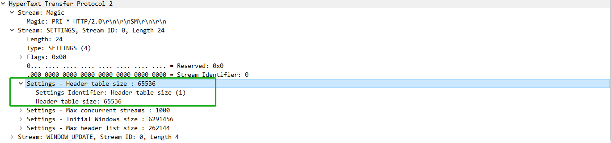
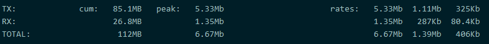
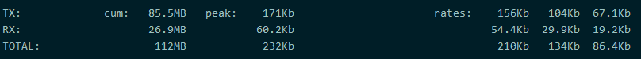
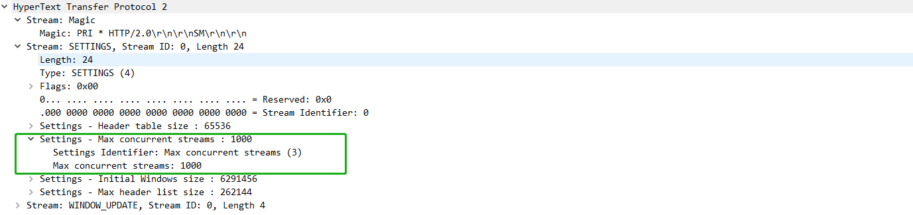
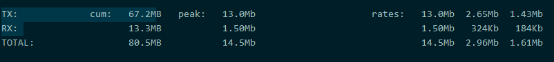
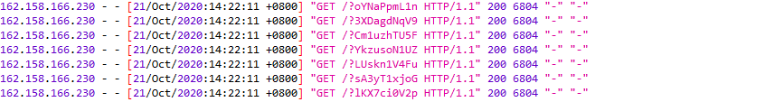

文章首发于安全客，链接https://www.anquanke.com/post/id/224321
一种利用支持HTTP/2协议的CDN进行带宽放大攻击的方法
关于HTTP/2
HTTP/2标准于2015年5月以RFC 7540正式发表，基于SPDY协议。根据W3Techs的数据，截至2019年6月，全球有36.5%的网站支持了HTTP/2。
HTTP/2协议相对于HTTP/1.1在性能上有了很大的提升，主要具有以下新特性
- 二进制分帧
- 请求与响应复用
- 服务端推送
- 头部压缩
HTTP/2头部压缩
由于在HTTP/1.1协议中，大量请求中都会出现相同的头部字段，这些字段消耗了大量资源。在HTTP/2协议中，使用了HPACK格式压缩对请求和响应头部进行了压缩。
压缩方法：
字典：包括静态字典和动态字典，静态字典包括常见的头部字段名，和常见的对应字段值。动态字典用于动态地添加一些新出现的头部字段。为了限制解码器的存储要求，动态表的大小是需要进行限制的，这个值可以通过HTTP/2中的SETTINGS_HEADER_TABLE_SIZE来设置。

霍夫曼编码：使用霍夫曼编码进行头部数据的压缩。
所以对于一个TCP连接，在客户端与服务端中，都需要维护一份字典。
HTTP/2测试
简单地搭建一个支持HTTP/1.1和HTTP/2的Web服务，分别使用HTTP/1.1协议和HTTP/2协议同时发起100个请求，并携带很大并且相同的Cookie，这里Cookie选取Cookie: A=a*1500; B=b*1500。由于HTTP/2的头部压缩，除第一个请求其他请求的Cookie都是经过压缩的，下面是两种协议请求时iftop获取到的大致的带宽情况。
HTTP/1.1(Cookie: A=a*1500; B=b*1500)

HTTP/2(Cookie: A=a*1500; B=b*1500)

CDN HTTP/2带宽放大攻击
由于HTTP/2性能上的优越，目前很多CDN都支持HTTP/2协议，CloudFlare甚至默认打开HTTP/2并且无法关闭。但是由于很多网站的源并只支持HTTP/1.1协议，这导致了CDN和客户端使用HTTP/2连接，而CDN只能使用HTTP/1.1和源站连接，所以CDN需要将Web请求从HTTP/2转换到HTTP/1.1，然后在转发到源站。
由于HTTP/2的头部压缩功能，客户端发送的HTTP/2头部，将被CDN转换为HTTP/1.1头部并转发到源，这种转换必然会导致头部内容解压，从而导致带宽放大。
前面已经提到，HTTP/2连接中，动态表的大小是不能过大的，所以需要尽量在动态表大小不超过范围的情况下使头部字段值变大，从而使压缩率变高，提高放大率。除此之外，HTTP/2使用一个TCP连接进行多路复用，如果同时在一个HTTP/2连接中发送大量请求，这些头部数据都会进行压缩，从而提高放大率，但是对于HTTP/2来说，会设置最大的并发流来进行限制。
对于CDN来说，也会进行最大并发流的设置，作者这里测试了CloudFlare和Fastly CDN，CloudFlare支持最大并发流数是256，Fastly则是100，头部选取了Cookie字段，值大约为3000B。对于Fastly CDN，只是建立一个HTTP/2连接，同时发送99个请求，下图为CDN转发请求到源站时，iftop获取的带宽情况，放大率在80倍左右。

测试过程中发现CloudFlare CDN放大效果不明显，分析源站日志才发现，255个并发流中，使用url为/?random_str的方式，无论GET还是POST，只有几个请求转发到源站了，应该是对这种攻击做了防护。
